Night Stint
Hour 19 of a 24 hour endurance race, 3am and raining. A driver has four minutes before her car comes in; the one ritual she never skips is Red Bull Sugarfree.
Borrowed aspiration: the viewer wants the life on screen and the product is the ritual that belongs to it. Most-posted AI ad style on X; sales evidence is weaker than UGC, so the story must carry a clear product moment, not just pretty shots.
Contact sheet
One keyframe per shot, with the caption as it will appear.
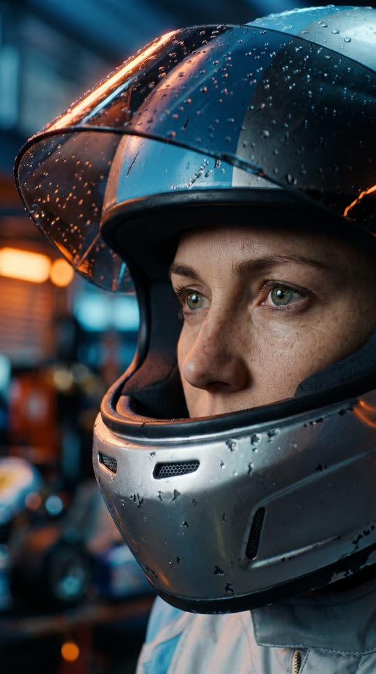

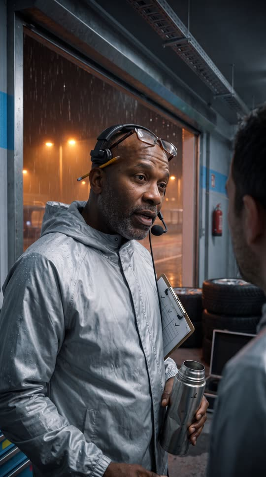


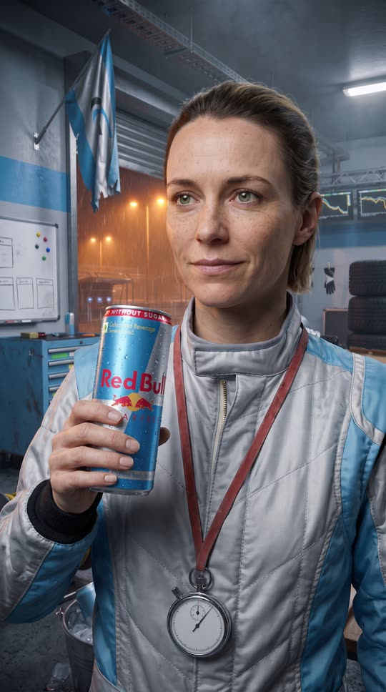
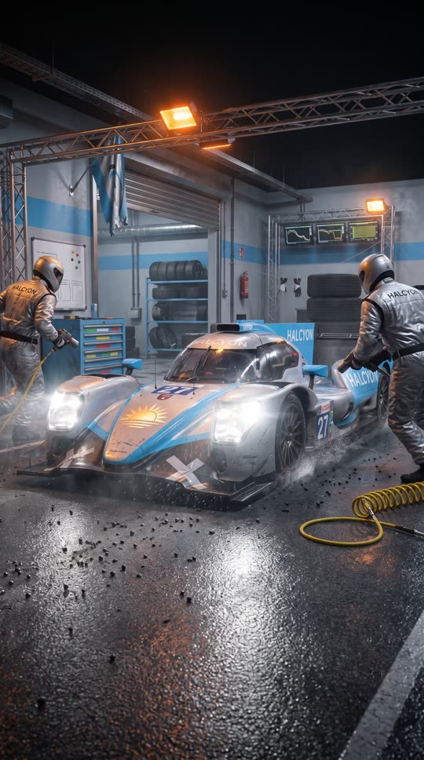
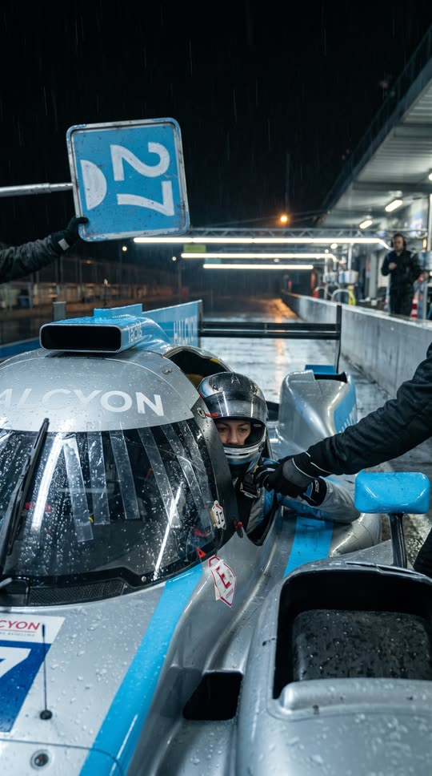
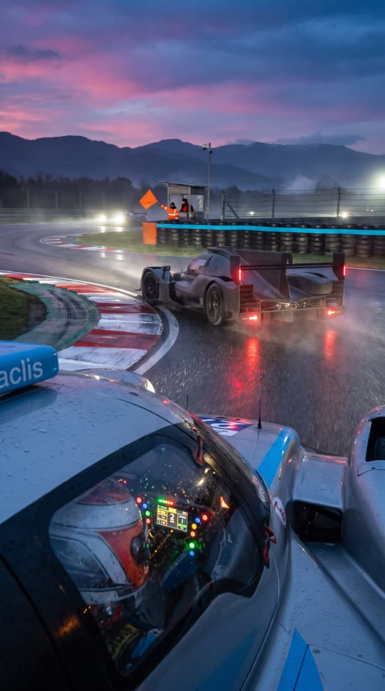
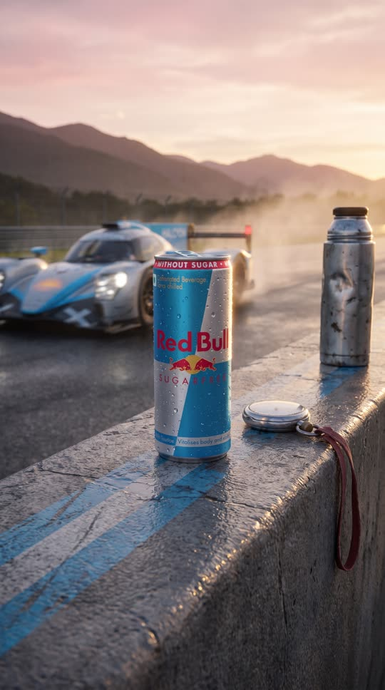
Cast and world
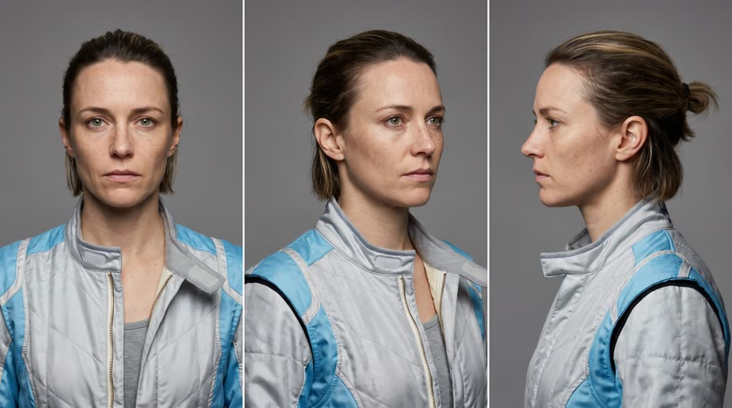
Voice: low, calm, dry, a little hoarse from the night, American
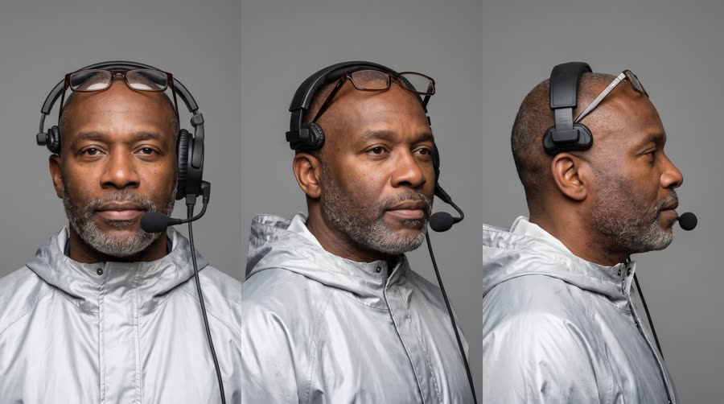
Voice: warm, gravelly, unhurried, American
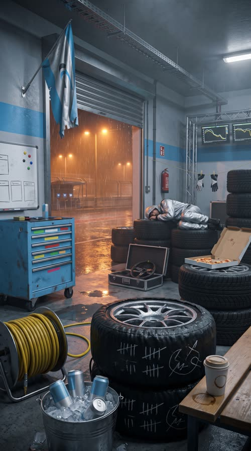
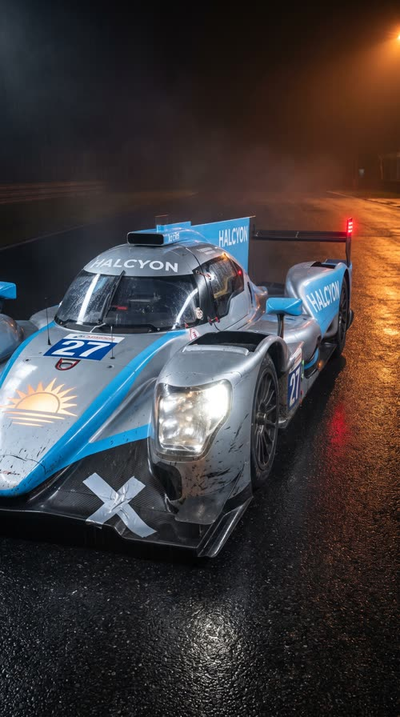
World. The fictional Vallon 24 Hours endurance race at the fictional Col de Vallon circuit, night, heavy rain, team garage of the fictional Halcyon Racing team. Palette. Built from the can: sky blue and brushed silver, with warm sodium-orange pit lights as the accent.
Fictional brands. Halcyon Racing (team, silver and sky-blue livery, car number 27); Vallon 24 (race); Marrow Tyres (tyre brand on the tyre stacks)
World bible
Fixed with the concept: the lore, the objects and the textures that make this world specific. Only product-adjacent props change per product.
- Halcyon Racing is an 11-person privateer team running a two-year-old car against factory teams. They have never finished on the podium at Vallon.
- Jess is the team's third driver and its rookie, so she gets the night stints nobody wants. She drives with her late father's old analog stopwatch on a lanyard; he ran a small kart track in Ohio.
- Ray has run pit walls for 30 years. He carries a dented steel thermos he never seems to drink from and keeps a pencil behind his ear.
- It has rained since hour 14. The crew sleep in 20 minute shifts on the tyre stacks.
Wear and time. Hour 19, 3:07am, five hours of rain. Everything is wet; the car carries mud, rubber marbles and tape; the crew are exhausted, food is half eaten, tape is everywhere. First light arrives at the hairpin.
Signature objects
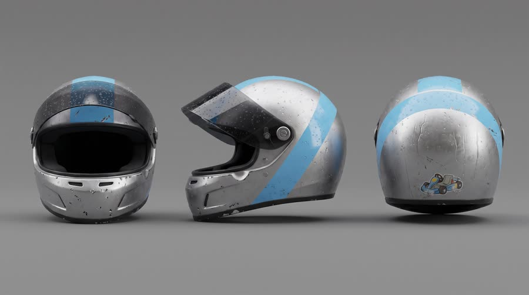
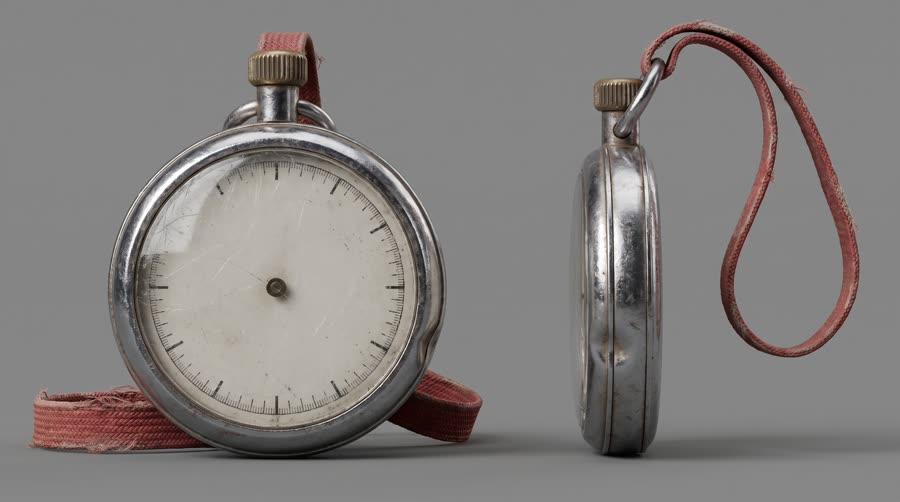
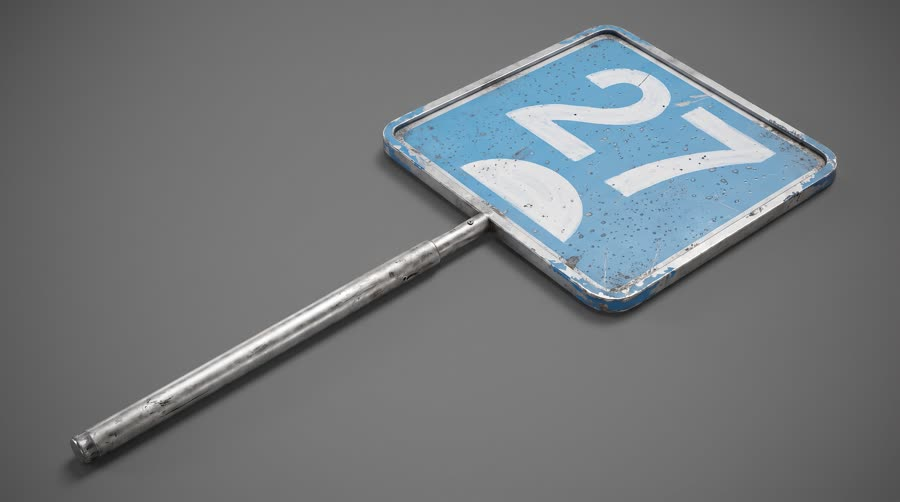
Set dressing by location
Foreground
wet rain tyres in black heated tyre blankets with white chalk tally marks on the sidewalls; a yellow air-gun hose coiled on a steel reel; a steel ice bucket of crushed ice holding three silver-blue cans; a paper cup of cold coffee with a brown ring inside
Midground
a dented sky-blue roll-cab tool chest with coloured tape strips on the drawers; a whiteboard stint chart of hand-drawn boxes, half wiped, with round magnets; a crew member asleep on a tyre stack with a silver jacket over his face; an open pizza box on the tyres with two slices left; a spare steering wheel in a foam-lined flight case; race gloves drying on a string line
Background
the open shutter with a curtain of rain and orange sodium light; timing monitors on a gantry showing coloured lap graphs; a silver and sky-blue team flag with a half-sun arc mark; cable trays, a red fire extinguisher, puddles reflecting the lights
Foreground
a strip of silver tape over a crack in the front splitter; mud and rubber streaks along the sidepods; clear tear-off strips on the windscreen
Midground
the half-sun arc mark on the nose; a blinking red rain light at the rear
Background
wet tarmac with orange reflections
Foreground
white and red kerbs with rubber marks; a gravel trap with tyre tracks through it
Midground
a stacked tyre wall with a sky-blue belt; a marshal post with an orange flag on a pole
Background
pine forest and snowy mountains under a pink dawn
- Jess: her father's scuffed analog stopwatch on a faded red lanyard; a frayed woven friendship bracelet on her left wrist; a silver and sky-blue helmet with a faded cartoon go-kart sticker on the back (shape only, no text)
- Ray: a pencil behind his right ear; a clipboard with a dog-eared paper stint sheet of pencil ticks; a dented steel thermos; reading glasses pushed up on his head
- Halcyon Racing: a white half-sun rising over a horizon line, silver and sky blue. On: car nose and flanks, crew jackets (chest), team flag, pit board, tool chest. Text in post: the word HALCYON only on the car flank; everywhere else the mark alone
- Marrow Tyres: a single yellow band around the sidewall, black and yellow. On: every tyre and tyre blanket. Text in post: none
rain drumming on the garage roof; the hum of tyre-blanket heaters; a distant, unintelligible circuit PA; generator drone; ice shifting in the bucket; radio squelch; air-gun bursts
Beats
| Time | Beat | What happens |
|---|---|---|
| 0-3 | hook | Eyes in the helmet opening, rain on the pit wall, a timing screen reads hour 19. She names where races are lost. |
| 3-8 | setup | The crew is asleep on tyre stacks; Ray tells her the car is four minutes out. |
| 8-14 | product | Her ritual: the can from the ice bucket, the crack, the sip. The brand line. |
| 14-22 | build | The car screams in, the crew leaps up, she drops in and leaves into the rain. |
| 22-27 | payoff | Onboard at the hairpin as dawn breaks, she passes the rival car. |
| 27-30 | cta | The can on the pit wall at sunrise with the tagline. |
Screenplay
37 spoken words in 30 s. Each line keeps its intent (fixed in the template) and its wording (written for this product).
| Time | Speaker | Line | Intent (template) |
|---|---|---|---|
| 0.6-2.8 | Jess | Hour nineteen. This is where races are lost. quiet, certain, almost to herself | Hook: name the moment in this world where the product matters most. |
| 4.6-6.4 | Ray | Car's in four minutes. You good? gentle, gravelly, checking on her | Raise the stakes with a countdown. |
| 7.0-7.9 | Jess | Give me one minute. calm, already reaching for something | She asks for the ritual moment. |
| 10.8-13.6 | Jess | Red Bull Sugarfree. Keeps me sharp, no sugar. low and satisfied after the sip, a small smile · Say: RED BULL SHUG-er-free, said as three clear words | Product line: name the product and the one benefit this world needs, using an allowed claim only. |
| 18.0-19.6 | Ray (off camera) | Gap's two seconds. Go get him. radio crackle, urgent but steady | Radio push: the race needs everything now. |
| 24.6-25.4 | Jess | Got him. breathless, under her breath, inside the helmet | Payoff: the win in two words. |
| 27.6-29.6 | Jess (off camera) | Wiiings without sugar. warm voiceover, unhurried · Say: WINGS, stretch the vowel slightly | Tagline in the brand's own words. |
Generation plan
U1 · 0 to 8.2 s · 9 s generation
Shots S01, S02, S03, S04 · References: jess card, ray card, garage plate, S01 keyframe as first frame
9:16 cinematic night scene in a racing team garage during a 24 hour race, heavy rain, orange pit lights, cool blue ambient light, 35mm grain. Shot 1 (0 to 3 s): extreme close-up of @Image1 (Jess) in an open helmet, visor lifted, she says quietly to herself: "Hour nineteen. This is where races are lost." Shot 2 (3 to 4.5 s): wide shot of the garage, two crew asleep on tyre stacks, rain past the open shutter. Shot 3 (4.5 to 6.6 s): @Image2 (Ray) leans in the doorway with a headset, gently: "Car's in four minutes. You good?" Shot 4 (6.6 to 9 s): Jess on a folding chair, helmet on her knee, calm, reaching toward an ice bucket: "Give me one minute." Native sound: rain on the roof, monitor hum, ice shifting. No music. No text on screen. No logos except the fictional HALCYON.
U2 · 8.2 to 13.8 s · 6 s generation · exact-risk (short, cheap to re-roll)
Shots S05, S06 · References: product can official, jess card, S05 keyframe as first frame
9:16 cinematic. Shot 1 (0 to 2.2 s): locked macro insert, a woman's hand lifts the exact can from @Image1 out of crushed ice, label to camera, upright and undistorted. Shot 2 (2.2 to 6 s): close-up of @Image2 (Jess) in the garage at night, she cracks the can, takes one sip, lowers it to chest height with the label readable, small smile, and says low and satisfied: "Red Bull Sugarfree (said RED BULL SHUG-er-free, three clear words). Keeps me sharp, no sugar." Keep the can's shape, colours, wordmark and bulls exactly as @Image1. Native sound: ice, the can crack, rain. No music.
U3 · 13.8 to 25.6 s · 12 s generation
Shots S07, S08, S09 · References: car plate, jess card, S07 keyframe as first frame
9:16 cinematic racing sequence, rain turning to first light. Shot 1 (0 to 3 s): low handheld wide, the silver and sky-blue number 27 prototype from @Image1 slides into its pit box from left to right, spray and sparks, crew rush in with wheel guns. Shot 2 (3 to 6 s): over the cockpit edge, @Image2 (Jess) in a closed helmet pulls her harness tight; a radio voice, crackly and steady: "Gap's two seconds. Go get him." The car pulls away down the pit lane. Shot 3 (6 to 12 s): onboard from behind the driver braking into a wet hairpin at dawn, the car dives inside a dark grey rival prototype with no logos and passes it; Jess, breathless inside the helmet: "Got him." Cars move forward in their direction of travel, no spins, no sliding sideways. Native sound: engines, downshifts, air guns, radio. No music.
U4 · 25.6 to 30 s · 5 s generation · exact-risk (short, cheap to re-roll)
Shots S10 · References: product can official, S10 keyframe as first frame
9:16 premium pack shot at sunrise. Slow crane down onto the exact can from @Image1 standing upright on a wet concrete pit wall, label to camera, droplets, golden rim light; a blurred silver and sky-blue race car passes on the track behind, mountains and pink dawn sky. The can does not move or change. Keep empty space above the can. Native sound: the car passing, morning birds. No music, no text.
Sound, music, voice, captions
| 0 to 13.8 s | tension | Low pulsing synth bass and soft taiko ticks like a clock, sparse, in D minor, 96 bpm; leaves room for dialogue. |
| 13.8 to 25.6 s | drive | Same motif, the pulse doubles, driving drums and distorted synth, big lift on the pit exit, peak at the pass. |
| 25.6 to 30 s | release | The motif resolves to D major, warm pads and a single held chord that rings out past the last frame. |
Added sound
- 10.6 s: can crack and fizz (the product moment must register; only added if the native crack is weak)
- Jess: native voice from U1, then her U1 vocal stem as voice reference for U2 and U3
- Ray: native in U1; radio line in U3 uses his U1 stem as reference with a radio filter
font: Inter Tight SemiBold, size: 5.2% of frame height, color: #FFFFFF, active word: #FFFFFF at full opacity, other words 70%, shadow: soft 0 2px 8px rgba(0,0,0,.6), position: centre, 68% down the frame, above the platform UI safe zone, max words on screen: 4, box: False
Post text- 27.4 to 30 s: Red Bull Sugarfree / Wiiings without sugar (Inter Tight Bold, white, centred in the empty space above the can, fade up 8 frames)
Adaptation contract
How this same concept takes any physical product.
| Product type | Where it sits in the story | Scale |
|---|---|---|
| ingested | she drinks it in the garage before the stint | hand |
| applied | she applies it at the garage mirror before the helmet goes on (skincare, balm, sunscreen, hair) | hand |
| worn | the one thing she puts on under the suit or with the kit (socks, base layer, watch, glasses) | body |
| handheld | the tool or gadget in her hands while she waits (earbuds, bottle, tracker, phone accessory) | hand |
| carried | the bag or case she opens at her garage chair | hand to lap |
| home | the one thing from home set up in the drivers' room behind the garage (pillow, lamp, blanket, chair) | room |
| consumable | the refill or pack on her tool cart that she reaches for every stint | hand |
Style bible
Look. Anamorphic 2.39 look reframed for 9:16, motivated practical light, shallow depth of field, one strong silhouette per frame, faces lit from one side, product always lit as the brightest object in its shot.
Camera. Slow push-ins for tension, handheld only inside action, locked-off inserts for the product, one hero move per unit (crane, dolly or tracking). Lenses: 35mm for people in places, 85mm for faces, 100mm macro for the product.
Light and texture. Low-key, mixed colour temperature: warm practicals against cool ambient. Rain, haze or dust to give the light shape. Fine 35mm grain, gentle halation on highlights, no over-sharpening, true blacks.
Pacing. Hook in under 2 seconds with an image and a line, cuts every 2 to 4 seconds, one held beat (at least 1.5 s) on the product moment, the fastest cutting in the build, one breath of stillness before the CTA.
Sound. Native sound first: rain, engines, room tone and dialogue come from the generations. One continuous composed score across all units, generated per story movement and stitched at picture cuts. Added sound only for events the viewer must register (the can opening).
Known failures.
- faces drift between units: always pass the cast card
- vehicles move wrongly: describe direction of travel and camera side
- product label warps in hand: keep product shots as locked inserts
- rain and sparks read as noise at 720p: keep them mid-ground
- wide side-on vehicle shots in 9:16 come back rotated or with the car standing on its nose: frame vehicles head-on or from behind, say four wheels on the ground and normal gravity
- helmets and suits pick up random text: say plain with no text
- props near the product get swapped for generic bottles: say what the container holds
- face shots with 4 or more references drift off the cast card: keep face shots to cast card, product and one location; describe props in text instead
- capitalised emphasis words in a prompt (ANALOG, START) get printed onto objects: never write words in capitals, describe the look instead
Claims and cost
Claims used (all from the product page): Caffeine helps to improve concentration and increase alertness; Same benefits of the original Energy Drink, without sugar (tagline form)
Video estimate: 32 s of generation at $0.27/s = $8.64 first pass, $20 to 30 with retakes, plus about $1.5 music.